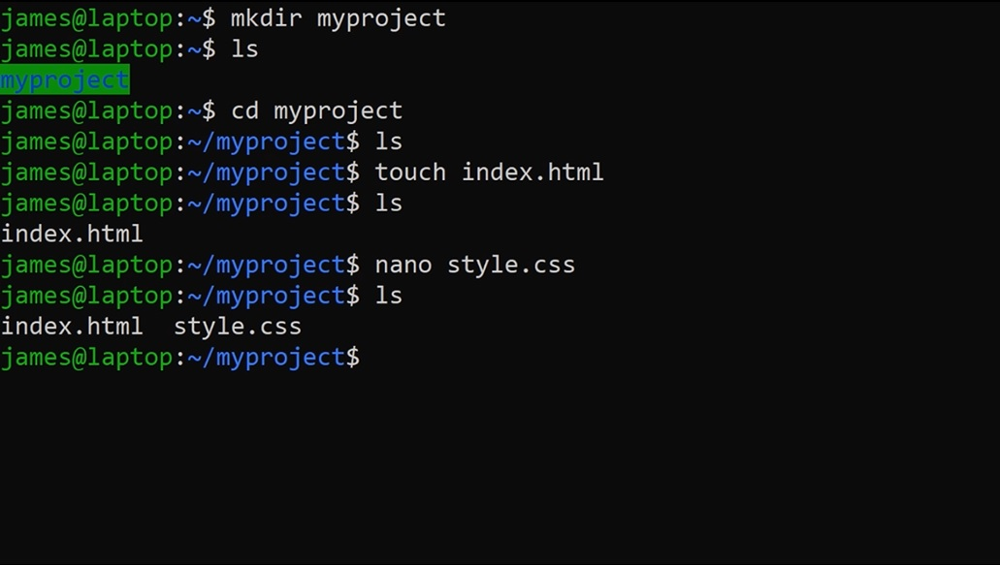

A free video course teaching you all you need to know to be effective at using the command line in your Junior Developer role.
This course was created to help you, the Junior Developer get the essential skills on the Command Line to be able to work at a professional level.
The course will take you through the common, most useful commands and techniques that are required for new developers to get employed and get on in their new roles.
It was put together by James Bubb as part of the Junior Developer Central project.
James is a Full Stack Developer and Teacher from Birmingham, UK. He works as a full time web developer and has previously worked with apprentices up and down the country to help them realise their love of coding.
There are 11 lessons in the course.
We won't be rigidly going through each and every command in a dull and stale manner. The course will quickly introduce you to all the essential commands and techniques that you'll need to be effective in your Junior Developer role.
Throughout the course you'll learn how to navigate around the command line, perform common tasks that you would normally do on the desktop and connect to remote machines to run commands and transfer files. We'll finish off the course by introduce you to the powerful world of command line scripting.
If you've struggled with the command line before or you're completely new to it, this course will give you everything you need to know in order to learn the skills you need for life as a Junior Developer
Get started now, it's free!